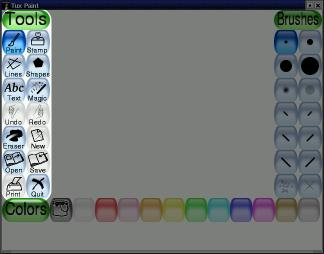
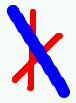

versión
0.9.14
Un sinxelo programa de debuxo para nenos
Copyright 2004 by Bill Kendrick
New Breed Software
bill@newbreedsoftware.com
http://www.newbreedsoftware.com/tuxpaint/
14 de Xuño de 2002 - 24 de Outubro de 2004
Copyright 2004 by Bill Kendrick
New Breed Software
bill@newbreedsoftware.com
http://www.newbreedsoftware.com/tuxpaint/
14 de Xuño de 2002 - 24 de Outubro de 2004
Que é "Tux Paint"?
Tux Paint é un programa de debuxo libre deseñado para os nenos pequenos (rapaces de 3 e máis). Ten unha interface sinxela e fácil de usar, efectos de son divertidos, e unha mascota animada que guia e axuda ós nenos a usar o programa. Proporciona un lenzo en branco e unha chea de ferramentas de debuxo que lle axudan ós nenos a ser creativos.
Licenza:
Tux Paint é un proxecto de Código Aberto, Software Libre que se libera baixo a GNU General Public License (GPL). é libre, e o "código fonte" do programa está dispoñible. (Isto permítelle a outras persoas engadir funcionalidades, arranxar erros, e usar partes do programa no seu propio software GPL).
Mire o ficheiro COPYING.txt para obter o texto completo da licenza GPL.
Obxectivos:
- Sinxelo e Divertido
- Tux Paint está pensado para ser un programa de debuxo sinxelo para nenos pequenos. Non está pensado para ser unha ferramenta de debuxo de propósito xeral. Está pensado para ser divertido e fácil de usar. Os efectos de son e un personaxe animado axudan ó usuario a enterarse de que está ocorrendo, e a mantelo entretido. Tamén hai punteiros grandes para o rato.
- Extensibilidade
- Tux Paint é extensible. Os pinceis e as estampas poden poñerse (droppped in) e sacarse (pulled out). Por exemplo, un profesor pode poñer unha colección de formas de animais e dicirlle ós seus estudiantes que debuxen un ecosistema. Cada forma pode ter un son que se reproduce, e mensaxes de texto que se amosan cando os nenos seleccionan a forma.
- Portabilidade
- Tux Paint portouse a varias plataformas de ordenador: Windows, Macintosh, Linux, etc. A interface é a mesma en todas elas. Tux Paint execútase ben en sistemas vellos (coma os Pentium 133), e pode compilarse para que se execute mellor en sistemas lentos.
- Simplicidade
- Non hai acceso directo a elementos internos do ordenador. A imaxe actual gárdase cando se sae do programa, e volve aparecer cando se volve executar. Para gardar imaxes non cómpre crear nomes de ficheiro ou usar o teclado. As imaxes ábrense seleccionándoas dunha colección de miniaturas das imaxes. O acceso a outros ficheiros do ordenador está limitado.
Executar Tux Paint
Usuarios de Linux/Unix
Tux Paint debería ter posto unha icona de lanzamento nos menús de KDE e/ou GNOME, en 'Gráficos.'
Tamén se pode executar o seguinte comando nunha liña de comandos (p.ex., "$"):
$ tuxpaintSe ocorre algún erro, amosarase na terminal (para "stderr").
Usuarios de Windows
Tux PaintSe instalou Tux Paint no seu ordenador usando 'Instalador de Tux Paint', este preguntaríalle se desexaba unha entrada no menú 'Inicio', e/ou un acceso directo no escritorio. Se aceptou, soamente ten que executar Tux Paint dende a sección 'Tux Paint' do menú 'Inicio' (p.ex., en "Tódolos programas" en Windows XP), ou facendo dobre clic na icona de "Tux Paint" no escritorio.
Se instalou Tux Paint usando a descarga do 'ficheiro ZIP', ou se usou o 'Instalador de Tux Paint', pero escolleu non poñer accesos directos, necesitará facer dobre clic na icona de "
tuxpaint.exe" dentro do cartafol de 'Tux Paint'.Por defecto, o 'Instalador de Tux Paint' porá o cartafol de Tux Paint en "
C:\Archivos de programa\", ainda que vostede puido ter trocado isto cando executou o instalador.Se usou a descarga do 'ficheiro ZIP', o cartafol de Tux Paint estará onde o puxo cando descomprimiu o ficheiro ZIP.
Usuarios de Mac OS X
Faga dobre clic na icona de "Tux Paint".
Pantalla de Título
Cando Tux Paint carga por primeira vez, aparecerá unha pantalla de título/créditos.
Unha vez que se completou a carga, prema unha tecla ou clique co rato para continuar. (Ou, despois de aproximadamente 30 segundos, a pantalla de título desaparecerá automáticamente).
Pantalla Principal
A pantalla principal está dividida nas seguintes seccións:
- Lado Esquerdo: Barra de Ferramentas
A barra de ferramentas contén os controis de debuxo e edición.
 - Centro: Lenzo de Debuxo
A parte máis grande da pantalla, no centro, é o lenzo de debuxo. Aquí é, obviamente, onde se debuxa!
- Lado Dereito: Selector
Dependendo da ferramenta actual, o selector amosa cousas diferentes. Por exemplo, cando está seleccionada a ferramenta Pincel, amosa tódolos pinceis dispoñibles. Cando está seleccionada a ferramenta Estampa, amosa as diferentes formas que se poden usar.
- Máis abaixo: Cores
Hai unha paleta cas cores dispoñibles preto do fondo da pantalla.
- Inferior: área de Axuda
Na parte inferior da pantalla, Tux, o Pingüin de Linux, da consellos e outra información mentres se debuxa.
Ferramentas Dispoñibles
Ferramentas de Debuxo
- Pintar (Pincel)

A ferramenta Pincel permite debuxar a man alzada, usando diferentes pinceis (pódense elixir no Selector da dereita) e cores (pódense elixir na paleta de cores do fondo).
Se mantén premido o botón do rato, e move o rato, debuxará mentres o move.
Mentres debuxa, reprodúcese un son. Canto máis grande sexa o pincel, máis grave será o ton.
- Estampa (Estampas de Goma)

A ferramenta Estampa é coma un estampa de goma, ou unha pegatina. Permite pegar imaxes fotográficas ou predeseñadas (coma un debuxo dun cabalo, dunha árbore ou da lúa) no debuxo.
Mentres move o rato, unha liña seguirá ó rato, sinalando onde se porá a estampa.
As estampas poden ter diferentes efectos de son. Algunhas estampas poden colorearse ou tinguirse.
As Estampas poden reducirse e expandirse, e moitas das estampas poden inverterse verticalmente, ou amosarse coma unha imaxe espellada, usando os controis da dereita no fondo da pantalla.
(NOTA: Se está establecida a opción "nostampcontrols", Tux Paint non amosará os controis Espellar, Inverter, Reducir e Aumentar para as estampas. Mire a documentación "Options").
- Liñas

Esta ferramenta permite debuxar liñas rectas usando os diferentes pinceis e cores que se usan normalmente co Pincel.
Clique e manteña o botón premido para elixir o punto de comezo da liña. Mentres move o rato, amosarase unha liña onde se vai debuxar a liña.
Solte o botón para completar a liña. Reproducirase un son.

- Formas

Esta ferramenta permite debuxar algunhas formas recheas ou non.
Seleccione unha forma do selector da dereita (circulo, cadrado, óvalo, etc.).
No lenxo, clique e manteña o botón premido para estirar a forma dende onde clicou. Nalgunhas formas pode cambiarse a proporción (p.ex., o rectángulo e o óvalo), e outras non (p.ex., o cadrado e o circulo).
Solte o botón cando remate de estirar.
- Modo Normal
Agora pode mover o rato polo lenzo para vira-la forma.
Clique outra vez e debuxarase a forma ca cor actual.
- Modo Formas Simples
- Se están activadas as formas simples (p.ex., ca opción "
--simpleshapes"), a forma debuxarase no lenzo cando solte o botón. (Non hai o paso no que se pode virar.)
- Texto

Escolla unha fonte (das 'Letras' dispoñibles na dereita) e unha cor (da paleta de cores do fondo). Clique na pantalla e aparecerá un cursor. Escriba o texto e aparecerá na pantalla.
Prema [Intro] ou [Retorno] e debuxarase o texto no debuxo e o cursor moverase unha liña para abaixo.
Clique na parte do debuxo que queira e a liña de texto que está escribindo moverase ali, onde pode continuar editándoa.
- Maxia (Efectos Especiais)

A ferramenta 'Maxia' é actualmente un conxunto de ferramentas especiais. Seleccione un dos efectos máxicos do seleccionador da dereita e despois clique no debuxo e arrastre para aplicar o efecto.
- Arco iris
- Esta é semellante ó pincel, pero mentres move o rato, debuxa tódalas cores do arco da vella.
- Escintileos
- Debuxa escintileos amarelos brillantes no debuxo.
- Espellar
- Cando se clica no debuxo co efecto máxico "Espellar" seleccionado, invertirase horizontalmente toda a imaxe (o da esquerda queda na dereita e o da dereita pasa á esquerda), converténdoa nunha imaxe espellada.
- Inverter
- Similar a "Espellar." Se se clica, invertirase verticalmente toda a imaxe (o de arriba para abaixo e o de abaixo para arriba).
- Desenfocar
- Isto fai que o debuxo se desdebuxe nas zonas polas que arrastre o rato.
- Cuadrícula
- Isto fai que o debuxo se cuadricule ("pixelice") onde queira que arrastre o rato.
- Negativo
- Isto invirte as cores nas partes do debuxo nas que arrastre o rato. (p.ex., o branco convírtese en negro, e viceversa.)
- Esvaecer
- Isto esvaece as cores nas zonas polas que arrastre o rato. (Se o fai no mesmo sitio moitas veces, e ó final quedará en branco.)
- Xiz
- Isto fai que partes do debuxo (onde mova o rato) parezan debuxadas con xiz.
- Pingar
- Isto fai que as cores "pinguen" nas zonas do debuxo onde mova o rato.
- Engrosar
- Isto fai que as cores máis escuras do debuxo se fagan máis grosas nas partes nas que arrastre o rato.
- Afinar
- Similar a "Engrosar", excepto que as cores escuras se volven máis finas (as cores máis claras fanse máis grosas).
- Encher
- Isto enche o debuxo cunha cor. Permite encher rapidamente partes do debuxo, coma se fora un libro de debuxos (coloring book).
- Goma

Esta ferramenta é semellante ó Pincel. Onde queira que clique (clique ou arrastre), borrarase o debuxo e quedará en branco, ou ca cor de fondo do debuxo, se comezou o debuxo actual cunha imaxe "Inicial".
Hai dispoñibles varios tamaños de goma.
Mentres move o rato, un cadrado segue ó punteiro, sinalando que parte do debuxo se borrará e quedará en branco.
Mentres borra, reproducirase un son de limpado.
Outros Controis
- Desfacer

Se clica nesta ferramenta desfarase a última acción de debuxo que fixo. Pode desfacer máis dunha vez!
Nota: Tamén se pode premer [Control]-[Z] no teclado para desfacer.
- Refacer

Se clica nesta ferramenta refarase a acción de debuxo que acaba de "desfacer" ca ferramenta 'Desfacer'.
Mentres non volva debuxar outra vez, pode refacer tantas veces coma "desfixo"!
Nota: Tamén se pode premer [Control]-[R] no teclado para refacer.
- Novo
Se se clica no botón "Novo" comezarase un novo debuxo. Primeiro preguntaráselle se desexa facer isto.
Nota: Tamén pode premer [Control]-[N] no teclado para comezar un novo debuxo.
- Abrir

Isto amosará unha lista de tódalos debuxos que gardou. Se hai máis debuxos dos que collen na pantalla, pode usar as frechas "Arriba" e "Abaixo" que están na cima e no fondo da lista para desprazarse pola lista de debuxos.
Clique nun debuxo para seleccionalo, e despois...
Imaxes 'Iniciais'
Clique no botón verde "Abrir" na parte inferior esquerda da lista para cargar o debuxo seleccionado.
(Tamén pode facer dobre clic na icona dun debuxo para cargalo.)

Clique no botón marrón "Borrar" (cubo do lixo) na parte inferior dereita da lista para borrar o debuxo seleccionado. (Pediráselle que confirme o borrado).

Ou clique no botón vermello con frecha "Atrás" na parte inferior dereita da lista para cancelar e voltar ó debuxo que estaba debuxando.
Xunto cos debuxos que creou vostede, Tux Paint proporciónalle as imaxes 'Iniciais'. Abrilas é coma crear un novo debuxo, excepto porque o debuxo non está en branco. As imaxes 'Iniciais' poden ser coma unha páxina dun caderno de debuxo (coloring book) (cun bosquexo do debuxo en branco e negro, que despois se pode colorear), ou coma unha fotografía 3D, na se poden debuxar os bits.
As imaxes 'Iniciais' teñen un fondo verde na pantalla 'Abrir'. (As imaxes normais teñen un fondo azul). Cando carga unha imaxe 'Inicial', debuxa nela, e despois clica en 'Gardar', créase un novo debuxo (non sobrescribe a imaxe 'Inicial' orixinal, así que poderá volver usala outra vez).
Se escolleu abrir un debuxo, e o seu debuxo actual non se gardou, preguntaráselle se desexa gardalo ou non. (Mire "Gardar," debaixo.)
Nota: Tamén pode premer [Control]-[O] no teclado para obter o diálogo 'Abrir'.
- Gardar

Isto garda o debuxo actual.
Se non o gardou antes, crearase unha nova entrada na lista de imaxes gardadas (ou sexa, crearase un novo ficheiro).
Nota: Non se lle preguntará nada (p.ex., o nome do ficheiro). Soamente se gardará o debuxo, e reproducirase un efecto de son de "disparador de cámara".
Se xa GARDOU antes o debuxo, ou se é un debuxo que cargou usando o comando "Abrir", preguntaráselle primeiro se desexa sobrescribi-la versión antiga, ou se desexa crear unha nova entrada (un novo ficheiro).
((NOTA: Se está establecida unha das opcións
"saveover"ou"saveovernew", non se lle preguntará antes sobrescribir a versión antiga. Mire a documentación "Options".)Nota: Tamén pode premer [Control]-[S] no teclado para gardar.
- Imprimir

Clique neste botón e imprimirase o seu debuxo!
- Deshabilitar a Impresión
Se está establecida a opción "
noprint" (xa sexa con "noprint=yes" no ficheiro de configuración de Tux Paint, ou usando "--noprint" na liña de comandos), deshabilitarase o botón "Imprimir".Mire a documentación "Options".
- Limitar a Impresión
Se se usa a opción "printdelay" (xa sexa con "
printdelay=SEGUNDOS" no ficheiro de configuración de, ou usando "--printdelay=SEGUNDOS" na liña de comandos), só poderá imprimir unha vez cada SEGUNDOS segundos.Por exemplo, con "
printdelay=60", só pode imprimir unha vez por minuto (1 minuto=60 segundos).Mire a documentación "Options".
- Comando de Impresión
(Só en Linux e Unix)
O comando que se usa para imprimir é actualmente un conxunto de comandos que convirten un PNG nun PostScript e o envian á impresora:
pngtopnm | pnmtops | lprEste comando pode cambiarse establecendo o valor de "printcommand" no ficheiro de configuración de Tux Paint.
Mire a documentación "Options".
- Opcións de Impresión
(Só para Windows)
Por defecto, Tux Paint só imprime na impresora predeterminada cas opcións predeterminadas cando se preme o botón 'Imprimir'.
Sen embargo, se preme a tecla [ALT] do teclado mentres preme o botón, e se non está no modo pantalla completa, aparecerá o diálogo de impresión de Windows, onde poderá trocar as opcións.
Pode almacenar os trocos na configuración de impresora usando a opción "printcfg", xa sexa usando "
--printcfg" na liña de comandos, ou "printcfg=yes" no propio ficheiro de configuración de Tux Paint ("tuxpaint.cfg").Se se usa a opción "printcfg", as opcións de impresión cargaranse dende o ficheiro "
userdata/print.cfg". Calquera troco gardarase aquí tamén.Mire a documentación "Options".
- Saír

Se clica no botón "Saír", pecha a ventá de Tux Paint, ou preme a tecla "Escape" sairá de Tux Paint.
(NOTA: O botón "Saír" pode deshabilitarse (p.ex., ca opción de liña de comandos "
--noquit"), pero a tecla [Escape] ainda funcionará. Mire a documentación "Options".Primeiro preguntaráselle se desexa saír.
Se escolle saír, e non gardou o debuxo actual, preguntaráselle primeiro se desexa gardalo. Se non é unha imaxe nova, entón preguntaráselle se desexa sobrescribir a versión antiga, ou crear unha nova entrada. (Mire "Gardar" enriba.)
NOTA: Se se garda a imaxe, cargarase automáticamente a seguinte vez que execute Tux Paint!
Xa que o diálogo 'Abrir' de Tux Paint só mostra os debuxos que ti creaches con Tux Paint, ¿que ocorre se queres cargar algún outro debuxo ou fotografía en Tux Paint para editar?
TPara facer isto, simplemente tes que converter o debuxo nun ficheiro de imaxe PNG (Portable Network Graphic), e poñelo no directorio "saved" de Tux Paint. ("
~/.tuxpaint/saved/" en Linux e Unix, "userdata\saved\" en Windows, "Library/Preferences/tuxpaint/saved/" en Mac OS X.)Usando '
tuxpaint-import'Os usuarios de Linux e Unix poden usar o script para shell "
tuxpaint-import" que se instalou ó instala-lo Tux Paint. Este usa algunhas das ferramentas NetPBM para converter a imaxe ("anytopnm"), redimensionala de xeito que colla no lenzo de Tux Paint ("pnmscale"), e convertela a PNG ("pnmtopng").Tamén usa o comando "
date" para obter a data e a hora actual, que é a convención de nomenclatura de ficheiros que usa Tux Paint para os ficheiros gardados. (Lembra que nunca se che pide un 'nome de ficheiro' cando vas gardar ou Abrir debuxos!)Para usar '
tuxpaint-import', simplemente executa o comando dende unha liña de comandos e proporciónalle o nome do(s) ficheiro(s) que desexas converter.Converterá os debuxos e poñeraos no directorio 'saved' de Tux Paint. (Nota: Se estás facendo isto para un usuario diferente - p.ex., o teu neno, executa o comando usando a súa conta.)
Exemplo:
$ tuxpaint-import avoa.jpg
avoa.jpg -> /home/username/.tuxpaint/saved/20020921123456.png
jpegtopnm: WRITING A PPM FILEA primeira liña ("
tuxpaint-import avoa.jpg") é o comando a executar. As dúas liñas seguintes son a saída do programa mentres está traballando.Agora podes abrir o Tux Paint, e estará dispoñible unha versión dese debuxo orixinal no diálogo 'Abrir'. ¡Simplemente fai dobre clic na súa icona!
Facéndoo Manualmente
Os usuarios de Windows, Mac OS X e BeOS deben facer actualmente a conversión manualmente.
Executa un programa de gráficos que sexa capaz de cargar o debuxo e gardalo coma un ficheiro de formato PNG. (Mira o ficheiro de documentación "PNG.txt" para obter unha lista de software suxerido, e outras referencias).
Reduce o tamaño da imaxe a un ancho máximo de 448 pixels de lado a lado e un alto máximo de 376 pixels altura (ou sexa, o tamaño máximo é 448 x 376 pixels).
Garda o debuxo con formato PNG. É moi recomendable que o nomees o ficheiro usando a data e a hora actual, xa que é a convención que usa Tux Paint:
YYYYMMDDhhmmss.png
- YYYY = Ano
- MM = Mes (01-12)
- DD = Día (01-31)
- HH = Hora, en formato de 24 horas (00-23)
- mm = Minuto (00-59)
- ss = Segundo (00-59)
p.ex.:
20020921130500- para o 21 de Setembro de 2002, 1:05:00pmPon este ficheiro PNG no directorio 'saved' de Tux Paint. (Mira enriba.)
En Windows, está no cartafol "
userdata". En Mac OS X, está en "Library/Preferences/tuxpaint/" no teu directorio persoal.
Se desexas engadir ou trocar cousas coma os Pinceis e as Estampas de Goma que se usan no Tux Paint, podes facelo de maneira sinxela poñendo ou eliminando ficheiros no disco duro.
Nota: Cómpre reiniciar o Tux Paint para que os trocos teñan efecto.
Onde Están Os Ficheiros
Ficheiros Estándar
Tux Paint busca os seus múltiples ficheiros de datos no seu directorio 'data'.
Linux e Unix
O sitio onde está este directorio depende de que valor se estableceu para "
DATA_PREFIX" cando se compilou o Tux Paint. Mira INSTALL.txt para obter máis detalles.Por defecto, o directorio é:
/usr/local/share/tuxpaint/Se o instalou dende un paquete, é máis probable que sexa:
/usr/share/tuxpaint/Windows
Tux Paint busca un directorio chamado 'data' no mesmo directorio no que está o executable. Este é o directorio que o instalador usou cando se instalou o Tux Paint, p.ex.:
C:\Archivos de programa\TuxPaint\dataMac OS X
Tux Paint almacena os ficheiros no teu cartafol "Libraries" da túa conta, en "Preferences", p.ex.:
/Users/Joe/Library/Preferences/
Ficheiros Persoais
Tamén podes crear pinceis, estampas, fontes e imaxes 'iniciais' no teu propio directorio para que Tux Paint ós atope.
Linux e Unix
O teu directorio persoal de Tux Paint é "
~/.tuxpaint/".Ou sexa, se o teu directorio persoal é "
/home/karl", entón o teu directorio de Tux Paint é "/home/karl/.tuxpaint/".Non esquezas o punto ("
.") antes de 'tuxpaint'!Windows
O teu directorio persoal de Tux Paint chámase "userdata" e está no mesmo directorio có executable, p.ex.:
C:\Archivos de programa\TuxPaint\userdataPara engadir pinceis, estampas, fontes, e imaxes 'iniciais', crea subdirectorios no teu directorio persoal de Tux Paint que se chamen "
brushes", "stamps", "fonts" e "starters" respectivamente.(Por exemplo, se creaches un pincel que se chama "
flower.png", deberías poñelo en "~/.tuxpaint/brushes/" en Linux ou Unix.)
Pinceis
Os pinceis que se usan para debuxar cas ferramentas 'Pintar' e 'Liñas' de Tux Paint son simplemente imaxes PNG en escala de grises.

A alfa (transparencia) da imaxe PNG úsase para determinar a forma do pincel, o que significa que a forma pode ser 'anti-aliased' e incluso parcialmente transparente!
As imaxes dos pinceis non deben ter máis de 40 pixels ó ancho e non deben ter máis de 40 pixels de alto. (ou sexa, o tamaño máximo é 40 x 40.)
Simplemente ponas no directorio "
brushes".Nota: Se tódolos teus novos pinceis aparecen coma cadrados ou rectángulos sólidos, é porque esqueciches usar a transparencia alfa! Mira o ficheiro de documentación "PNG.txt" para obter máis información e consellos.
Estampas
Tódolos ficheiros relacionados cas estampas están no directorio "
stamps". É útil crear subdirectorios e sub-subdirectorios para organizar as estampas. (Por exemplo, podes ter un cartafol "vacacións" cos subcartafoles "halloween" e "nadal").Imaxes
As Estampas de Goma en Tux Paint poden estar compostas por varios ficheiros independentes. O único ficheiro que é imprescindible é, dende logo, o debuxo.

As Estampas que usa Tux Paint son imaxes PNG. Poden ser de cores ou de escala de grises. A alfa (transparencia) do PNG úsase para determinar a forma real do debuxo (doutra maneira, estamparás un rectángulo grande nos debuxos).
Os PNGs poden ser de calquera tamaño, pero na práctica, unha de 100 pixels de ancho por 100 pixels de alto (100 x 100) é grande de máis para Tux Paint.
Nota: Se tódalas túas novas estampas teñen un contorno sólido de forma rectangular dunha cor sólida (p.ex. branco ou negro), é porque esqueciches usar a transparencia alfa! Mira o ficheiro de documentación "PNG.txt" para obter máis detalles e consellos.
Texto de Descrición
Ficheiros de texto (".TXT") co mesmo nome có PNG. (p.ex. a descrición de "
debuxo.png" almacénase en "debuxo.txt" que está no mesmo directorio).A primeira liña do ficheiro de texto usarase para a descrición da imaxe de estampa en Inglés de Estados Unidos. Debe estar codificado en UTF-8.
Soporte de Linguas
Poden engadirse liñas adicionais o ficheiro de texto para proporcionar traduccións da descrición, para amosalas cando Tux Paint se está executando nunha lingua diferente (coma o Francés ou o Español).
O comezo da liña debe corresponder co código da lingua en cuestión (p.ex. "
fr" para o Francés, e "zh_tw" para o Chinés Tradicional), seguido por ".utf8=" e a descrición traducida (codificada en UTF-8).Hai scripts no directorio "
po" para converti-los ficheiros de texto a formato PO (e ó revés) para traducir fácilmente a diferentes linguas. Polo tanto nunca debes engadir ou cambiar as traduccións dos ficheiros .txt directamente.Se non hai traducción dispoñible para a lingua na que se está executando Tux Paint, usarase o texto en Inglés de Estados Unidos.
Usuarios de Windows
Usa o Bloc de Notas (NotePad) ou o WordPad para editar/crear estes ficheiros. Asegúrate de gardalos coma Texto Plano, e asegúrate de que teñen a extensión "
.txt" (o nome do ficheiro remata en ".txt")...
Efectos de Son
Ficheiros WAVE (".WAV") co mesmo nome có PNG. (p.ex. o efecto de son de "
debuxo.png" é o ficheiro de son "debuxo.wav" que está no mesmo directorio).Soporte de Linguas
Para ter sons para idiomas diferentes (p.ex., se o son é alguén dicindo unha palabra, e queres versións traducidas da palabra), tamén podes crear ficheiros WAV co mesmo código de idioma no nome do ficheiro, da forma: "
ESTAMPA_CODIGO.wav"O efecto de son de "
debuxo.png", cando Tux Paint se está executando en Español, debería ser "debuxo_es.wav". En Francés, "debuxo_fr.wav". Etc...
Opcións das Estampas
Ademais dunha forma gráfica, un descrición, e un efecto de son, as estampas tamén poden ter outros atributos. Para facer isto, cómpre crear un ficheiro de 'datos' para a estampa.
Un ficheiro de datos dunha estampa é soamente un ficheiro de texto que contén as opcións.
O ficheiro ten o mesmo nome cá imaxe PNG, pero con extensión "
.dat". (p.ex., o ficheiro de datos de "debuxo.png" é o ficheiro de texto "debuxo.dat" que está no mesmo directorio).Estampas de Cor
As estampas poden ser feitas para ser "colorables" ou "tinguibles".
Colorables
As estampas "colorables" son coma pinceis - colles a estampa para conseguir a forma, e despois colles a cor que queres que teña. (As estampas de símbolos, coma os matemáticos e os musicais son un exemplo).
Non se usa nada da imaxe orixinal agás a transparencia (canle "alfa"). A cor da estampa é unha cor sólida.
Engade a palabra "
colorable" ó ficheiro de datos da estampa.Tinguibles
As estampas "tinguibles" son similares ás "colorables", excepto por que se conservan os detalles da imaxe orixinal. (Expresándoo técnicamente, úsase a imaxe orixinal, pero o seu matiz cámbiase, baseándose na cor seleccionada).
Engade a palabra "
tintable" ó ficheiro de datos da estampa.Algunhas veces non queres tinguir as partes en branco ou gris dunha imaxe (mira, por exemplo, a estampa do rotulador imborrable no paquete predeterminado de estampas). Podes engadir a palabra "
notintgray" ó ficheiro de datos da estampa para conseguir isto. Deste xeito só se tinguirán as áreas cunha saturación superior ó 25%.Estampas Inalterables
Por defecto, unha estampa pode ser invertida co de riba para abaixo, espellada, ou as dúas cousas a un tempo. Isto faise usando os botóns de control debaixo do selector de estampas, na parte inferior esquerda da ventá de Tux Paint.
Algunhas veces, non ten sentido que unha estampa poida inverterse ou espellarse; por exemplo, as estampas de letras ou números. A veces as estampas son simétricas, así que deixarlle ó usuario invertelas ou espellalas non é útil.
Para facer que non se poida inverter unha estampa, engade a opción "
noflip" ó ficheiro de datos da estampa.Para evitar que unha estampa poida ser espellada, engade a opción "
nomirror" ó ficheiro de datos da estampa.Usuarios de Windows
Podes usar o Bloc de Notas (NotePad) ou o WordPad para crear estes ficheiros. Asegúrate de gardalos coma Texto Plano, e de que o seu nome de ficheiro ten "
.dat" no remate, e non ".txt"...Imaxes Pre-Espelladas
Nalgúns casos, poderías querer proporcionar unha versión pre-debuxada dunha imaxes espellada dunha estampa. Por exemplo, imaxina un debuxo dun camión de bombeiros cas palabras "Bombeiros" escritas nun lado. ¡Probablementes non quererás que o texto apareza ó revés cando se espelle a imaxe!
Para crear unha versión espellada dunha estampa que queres que use Tux Paint, mellor ca espellala, simplemente crea un segundo ficheiro "
.png" co mesmo nome, excepto que levará a cadea "_mirror" antes da extensión.Por exemplo, para a estampa "
camion.png" poderías crear outro ficheiro chamado "camion_mirror.png", que se usará cando se espelle a estampa (mellor ca usar unha versión ó revés de 'camion.png').
Fontes

As fontes que usa Tux Paint son as TrueType Fonts (TTF).
Simplemente ponas no directorio "
fonts". Tux Paint cargará a fonte e proporcionará catro tamaños diferentes no selector 'Letras' cando se use a ferramenta 'Texto'.
Imaxes 'Iniciais'
As imaxes 'Iniciais' aparecen no diálogo 'Abrir', xunto cos debuxos que creaches. Teñen un botón verde de fondo, en vez de azul.
A diferencia dos teus debuxos gardados, cando seleccionas e abres unha imaxe 'inicial', realmente estás creando un novo debuxo. No canto de estar en branco, o novo debuxo contén o contido da imaxe 'inicial'. Ademais, cando editas o teu novo debuxo, o contido da imaxe 'inicial' orixinal aféctalle.
Estilo Caderno de Debuxo (Coloring-Book Style)Estilo EscenarioO tipo de imaxe 'inicial' máis básico é semellante a un debuxo dun caderno de debuxo (coloring book). É o contorno dunha forma que se pode colorear e engadirlle detalles. En Tux Paint, mentres debuxas, escribes texto, ou pos estampas, o contorno permanece 'enriba' do que debuxas. Podes borrar as partes do debuxo que fixeches, pero non podes borrar o contorno.
Para crear este tipo de imaxe 'inicial', simplemente debuxa un debuxo sen contornos (outlined) nun programa de debuxo, fai que o resto do gráfico sexa transparente (isto aparecerá en branco no Tux Paint), e gárdao coma un ficheiro de imaxe con formato PNG.
Xunto ca capa (overlay) de estilo 'caderno de debuxo' (coloring-book style), tamén podes proporcionar unha imaxe de fondo distinta coma parte dunha imaxe 'inicial'. A capa actúa do mesmo xeito: non se pode debuxar enriba dela, borrarse, nin lle afectan as ferramentas 'Máxicas'. ¡Sen embargo, no fondo si que se pode!
Cando se usa a ferramenta 'Goma' nun debuxo baseado neste tipo de imaxe 'inicial', no canto de poñer o lenzo en branco, volve aparecer nesa parte do lenzo o debuxo do fondo orixinal.
Creando unha capa e un fondo, podes crear unha imaxe 'inicial' que simule profundidade. Imaxina un fondo que amosa o océano, e unha capa que é o debuxo dun arrecife. Entón podes debuxar (ou estampar) peixes no debuxo. Estes aparecerán no océano, pero nunca 'diante' do arrecife.
Para crear este tipo de imaxe 'inicial', simplemente crea unha capa (con transparencia alfa) como se describe enriba, e gárdaa coma unha imaxe PNG. Despois crea outra imaxe (sen transparencia), e gárdaa co mesmo nome de ficheiro, pero con "
-back" no final do nome. (p.ex., "arrecife-back.png" sería o debuxo do océano do fondo que lle corresponde á capa "arrecife.png", ou primeiro plano).As imaxes 'iniciais' deben ter o mesmo tamaño có lenzo de Tux Paint. No modo predeterminado 640x480, sería de 448x376 pixels. Se estás usando o modo 800x600 mode, debe ser de 608x496. (Debe ter 192 pixels menos ó ancho, e 104 pixels menos ó alto cá resolución).
Ponas no directorio "
starters". Cando se acceda ó diálogo 'Abrir' en Tux Paint, as imaxes 'iniciais' aparecerán cun fondo verde no comezo da lista.Nota: Nota: As imaxes 'iniciais' non poden sobrescribirse dende Tux Paint, xa que cargar unha imaxe 'inicial' é en realidade crear unha imaxe nova. ( Pero non está en branco, xa que hai algo co que traballar). O comando 'Gardar' simplemente crea un novo debuxo, coma se se usara o comando 'Novo'.
Nota: As imaxes 'iniciais' están 'ligadas' ós debuxos gardados, usando un pequeno ficheiro de texto que ten o mesmo nome có ficheiro gardado, pero con "
.dat" coma extensión. Isto permite que a capa superior e fondo, se hai algún, continuen afectando ó debuxo incluso despois de que pechar o Tux Paint, ou se cargue ou comece outro debuxo. (Noutras palabras, se baseas un debuxo nunha imaxe 'inicial', esta sempre lle afectará).
A outra documentación incluída con (no cartafol/directorio "docs":
- AUTHORS.txt
Lista de autores e contribuíntes- CHANGES.txt
Resumo dos trocos entre versións- COPYING.txt
Licenza (A GNU General Public License)- INSTALL.txt
Instruccións para compilar/instalar, cando sexa posible- OPTIONS.html
Instruccións detalladas sobre as opcións da liña de comandos e do ficheiro de configuración, para aqueles que non queren usar Tux Paint Config.- PNG.txt
Notas para crear imaxes de formato PNG para usar en Tux Paint- TODO.txt
Unha lista das características pendentes ou erros que necesitan solución
Se necesitas axuda, síntete libre de contactar con New Breed Software:
http://www.newbreedsoftware.com/Tamén podes participar nas múltiples listas de correo de Tux Paint:
http://www.newbreedsoftware.com/tuxpaint/lists/
![[Captura da Pantalla de Título]](images/tuxpaint-title.jpg)
![[(Lenzo)]](images/canvas.jpg)
![[Selectores - Pinceis, Letras, Formas, Estampas]](images/selector.jpg)
![[Cores: Negro, Branco, Vermello, Rosa, Laranxa, Amarelo, Verde, Azul Celeste, Azul, Púrpura, Marrón, Gris]](images/colors.jpg)